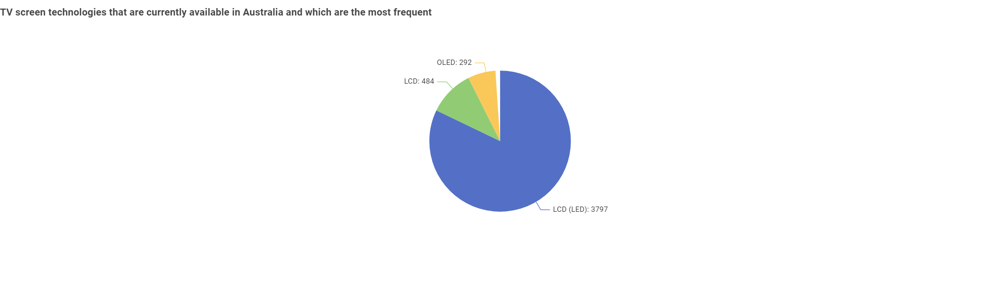
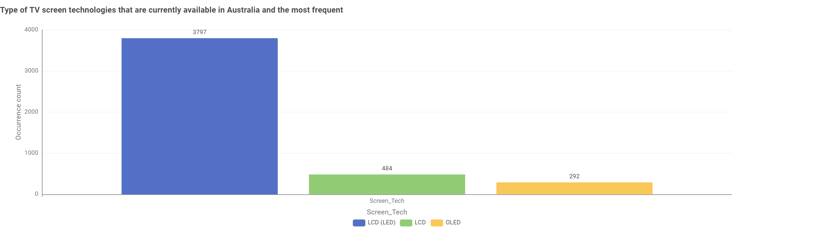
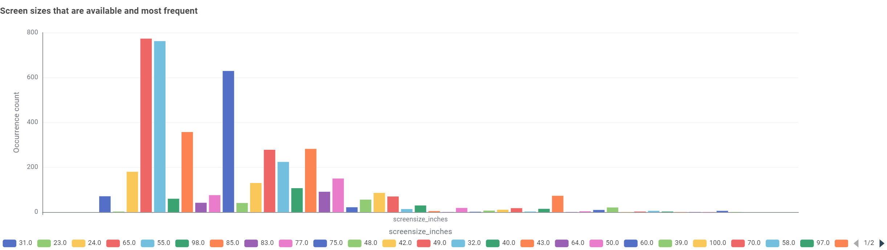
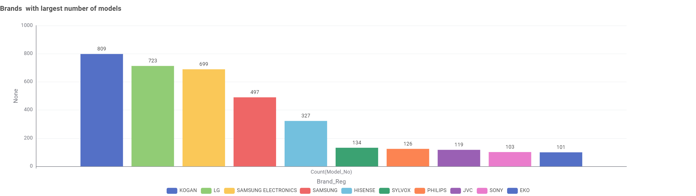
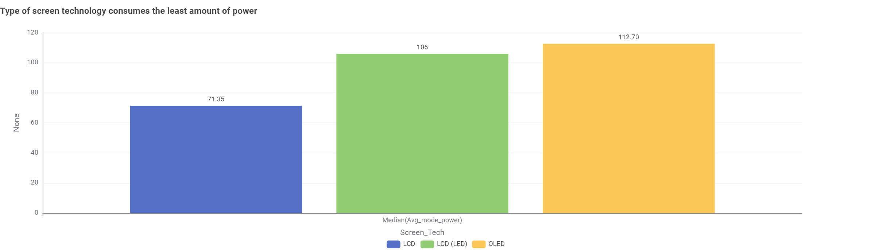
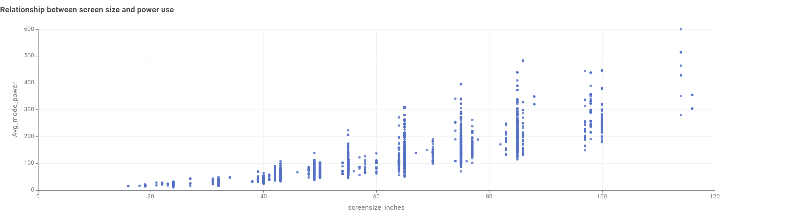
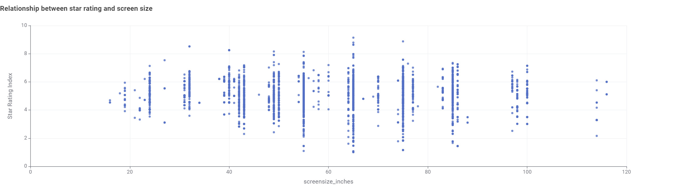
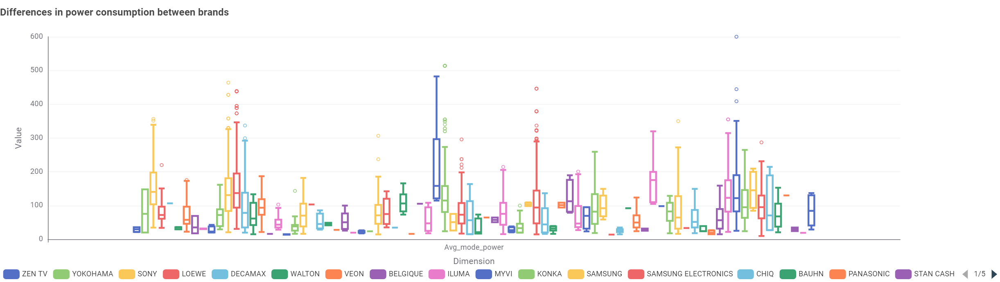
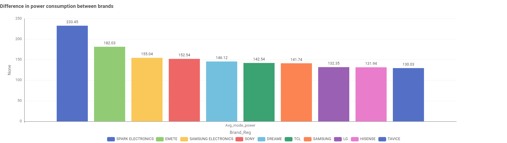

Household appliances account for a large share of electricity use in Australian homes.
Choosing efficient appliances can lower power bills and reduce greenhouse gas emissions.
Energy Rating Label
Many appliances sold in Australia must display the Energy Rating Label. More stars
means a more efficient appliance, and the label shows estimated annual energy use in kWh.
Where the Power Goes
Heating and cooling, water heating, refrigeration and home entertainment are
among the biggest users of electricity in a typical household.
Standby Power
Devices left on standby still draw power. Switching off at the wall can make a
small but steady difference to your yearly energy bill.
Television Energy Consumption
Televisions are one of the most common appliances in Australian homes. The charts below
explore the TV models registered in Australia by screen technology, size, brand, star rating
and power use. Where a chart has tabs, click them to switch between views.
1. What TV screen technologies are available, and which are most frequent?


Three technologies are available: LCD (LED), LCD and OLED. LCD (LED) is by far the most
frequent with 3,797 models, compared with 484 LCD and 292 OLED models.
2. What screen sizes are available, and which are most frequent?

Sizes range from under 20 to over 110 inches. The most frequent are 65" and 55"
(around 770 models each), followed by 75" (around 630) and 85" (around 350).
3. Which brands have the largest number of models?

Kogan has the most models (809), followed by LG (723) and Samsung Electronics (699).
Samsung also appears separately with 497 models, so combined it would rank first.
4. Which screen technology consumes the least power?

LCD has the lowest median power use (71.35 W), followed by LCD (LED) at 106 W.
OLED uses the most at 112.70 W.
5. What is the relationship between screen size and power use?

There is a clear positive relationship: larger screens use more power. The spread in
power use also widens as screen size increases.
6. What is the relationship between star rating and screen size?

There is no strong relationship. Star ratings vary widely (roughly 1 to 9) at every
screen size, so a bigger TV is not necessarily less efficient for its size.
7. Are there differences in power consumption between brands?


Yes. The box plot shows power use varies a lot between brands and within each brand.
Spark Electronics has the highest average power (233.45 W), well above the other
top-10 brands, which range from about 130 to 182 W.
About Us
PowerWise is a placeholder website created for the COS30045 Data Visualisation lab.
Our goal is to help Australian consumers understand how much energy their appliances use.
Our Mission
To present clear, easy-to-understand information about appliance energy consumption in the Australian market.
Our Data
Future versions of this site will visualise data on appliance energy ratings and consumption.